Ayuda de AllStickers
AllStickers es una app para iPhone que lleva la cuenta de tus cromos: los que tienes, los que te faltan y los repetidos.
¿Necesitas ayuda?
Busca tu duda en este manual. Si no la encuentras, tienes una idea o algo no funciona, escríbenos a allstickers.app@icloud.com. Desde la app es más fácil: en Ayuda, toca «Sugerencias y fallos» y el correo saldrá preparado con los datos que necesitamos para encontrar el fallo.
Guía rápida para usar AllStickers. Cada apartado se lee en menos de un minuto.
Contenido
- Bienvenida
- Primeros pasos
- Crear un álbum
- Apuntar los que tengo
- Repetidos
- Buscar y filtrar
- Editar un álbum
- Compartir un álbum
- Intercambiar
- Catálogo
- Publicar un álbum
- iCloud y tus iPhone
- Sugerencias y fallos
- Preguntas frecuentes
Bienvenida
La primera vez que abres la app ves tres páginas. Puedes saltarlas y volver a verlas desde Ayuda.
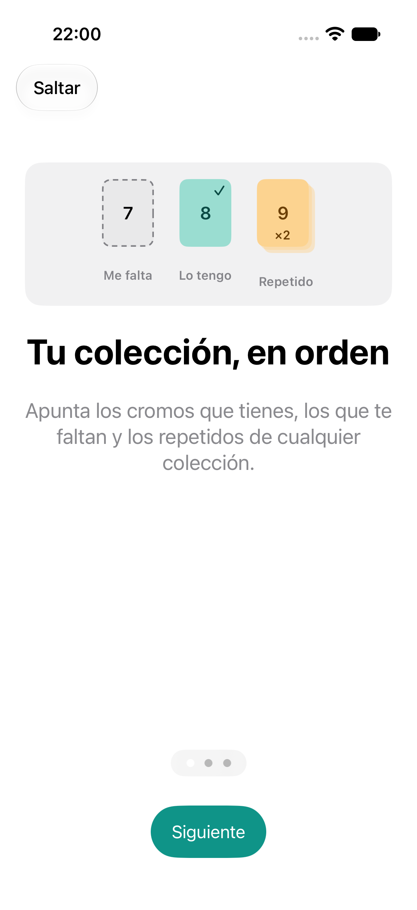
- Tu colección, en orden. Apunta los cromos que tienes, los que te faltan y los repetidos de cualquier colección.
- Un toque y listo. Toca un cromo para marcar que lo tienes. En «Repetidos», cada toque suma uno.
- Cambia con tus amigos. Juntad los iPhone y cambiad repetidos sin internet. Los cromos se apuntan solos en los dos.
Primeros pasos
Qué es AllStickers y cómo se ve cada cromo.
- AllStickers te ayuda a llevar la cuenta de tus colecciones de cromos: los que tienes, los que te faltan y los repetidos.
- Cada cromo es una carta con su número. Si está punteada, te falta. Si está verde y con una ✓, ya lo tienes. Si está en ámbar y con «×2», tienes repetidos.
- Para empezar, crea tu primer álbum con el botón ＋ de «Mis álbumes».
- Si tienes dudas, toca el botón ? de «Mis álbumes» para volver a esta ayuda.
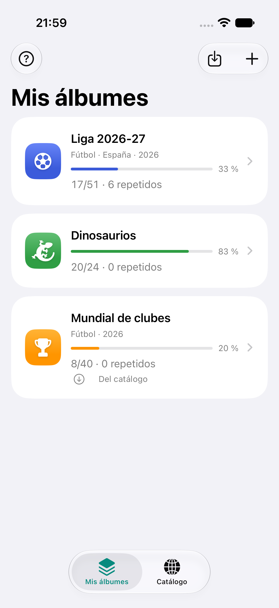
Crear un álbum
Nombre, categoría, portada, secciones y cromos.
- En «Mis álbumes», toca ＋.
- Escribe el nombre. Si quieres, elige la categoría, el país y el año, que ayudan a encontrarlo en el catálogo.
- Elige un icono o un emoji y un color, y toca «Crear».
- Se abre el editor. Toca «Añadir sección» y ponle un nombre, por ejemplo el de un equipo.
- En «Cromos», escribe 1-25 para crear del 1 al 25 de golpe. También vale una lista con comas, como 1, 2, 5bis, o las dos cosas juntas.
- Si una sección tiene los mismos cromos que otra, elige «Copiar cromos de» y no tendrás que escribirlos.
- Toca «Listo» y empieza a apuntar.
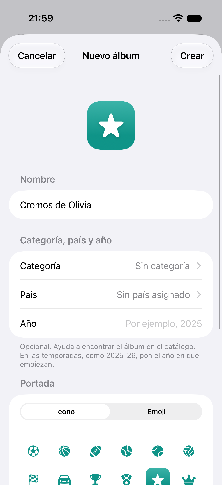
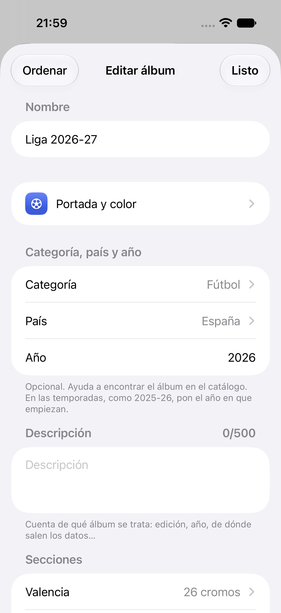
Apuntar los que tengo
Marca los cromos que ya tienes.
- Abre el álbum y elige «Tengo» arriba.
- Toca un cromo para marcarlo: se pone verde y lleva una ✓.
- Si te equivocas, tócalo otra vez para desmarcarlo. Si tenía repetidos, la app te pregunta antes.
- Arriba ves qué parte del álbum llevas, cuántos tienes, cuántos te faltan y cuántos repetidos guardas.
- Para empezar de cero, mantén pulsado el nombre de una sección, o abre el menú «…» del álbum, y toca «Borrar lo apuntado». Los cromos no se borran: vuelven a «me falta». La app te pregunta antes.
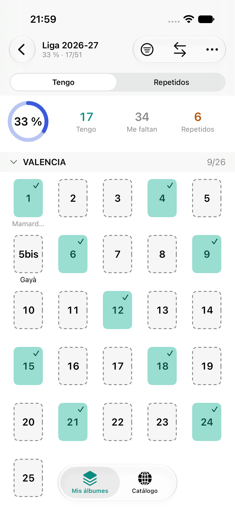
Repetidos
Apunta los que tienes de más para cambiarlos.
- Abre el álbum y elige «Repetidos» arriba.
- Toca un cromo para sumar un repetido. Se pone en ámbar y muestra cuántos tienes, por ejemplo «×2».
- Mantén pulsado un cromo para restar uno, ponerlo a cero o ver el detalle.
- Al apuntar un repetido, el cromo también queda marcado como que lo tienes.
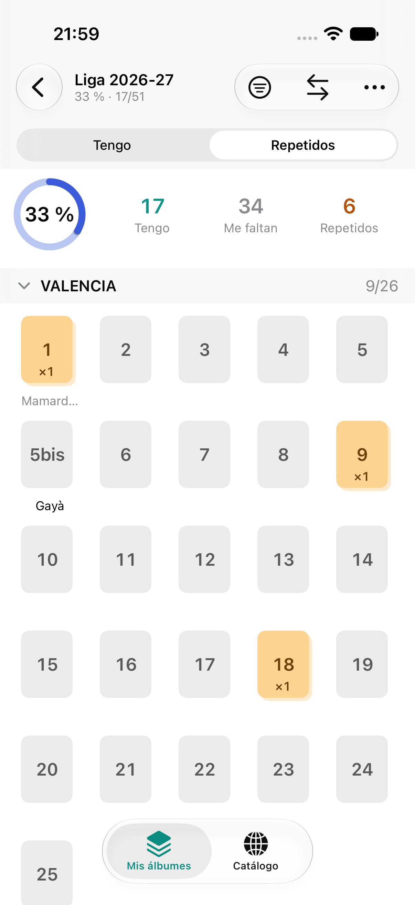
Buscar y filtrar
Encuentra un cromo en un álbum grande.
- Dentro del álbum, toca el buscador de abajo, «Código o nombre», y escribe un número o un nombre.
- Con el botón de filtro eliges ver todos los cromos, solo los que te faltan o solo los repetidos.
- Toca el nombre de una sección para plegarla o desplegarla. En el botón de filtro también puedes plegarlas o desplegarlas todas.
Editar un álbum
Qué se conserva y qué se pierde al cambiarlo.
- Dentro del álbum, abre el menú «…» y toca «Editar álbum».
- Puedes añadir secciones y cromos, cambiar su orden y cambiar la portada, el color, la categoría, el país y el año. Lo que tienes apuntado se mantiene.
- Si borras un cromo o una sección, o les cambias el número o el nombre, lo apuntado en ellos se pierde. La app te avisa antes.
- Para renombrar o borrar un álbum, desliza su tarjeta hacia la izquierda en «Mis álbumes».
Compartir un álbum
Pasa un álbum a tus amigos para que no tengan que crearlo.
- En el editor del álbum, toca «Exportar» y envíalo por Mensajes, AirDrop o como prefieras. Solo se envían las secciones y los cromos, no lo que tienes apuntado.
- Quien lo recibe lo abre con AllStickers, o lo importa con el botón de importar de «Mis álbumes».
- Un álbum recibido no se puede editar, para que sea igual para todos. Sí puedes apuntar tus cromos.
- Si quieres cambiarlo, abre su menú «…» y toca «Crear copia editable».
Intercambiar
Cambia repetidos con alguien que esté a tu lado.
- Los dos tenéis que tener el mismo álbum: uno lo exporta y el otro lo importa.
- Juntaos, abrid el álbum y tocad el botón de intercambiar, el de las dos flechas. No hace falta internet.
- La primera vez eliges un alias, como «🦖 Olivia». Es el nombre que verá el otro.
- En «Cerca de ti», toca el alias de tu amigo. Cuando acepte, los dos veréis lo que os podéis cambiar.
- Marcad o desmarcad cromos. Con «Igualar», los dos dais el mismo número de cromos.
- Cuando los dos toquéis «Aceptar», los cromos se apuntan solos en los dos iPhone.
- Si os habéis equivocado, abre el menú «…», entra en «Historial de intercambios» y deshaz el último.
Catálogo
Álbumes que han creado otros usuarios, listos para descargar.
- Los álbumes del catálogo los crean y los mantienen los propios usuarios de AllStickers, no la app.
- En la pestaña «Catálogo», busca por nombre, categoría, país o año, por ejemplo «fútbol brasil 2025».
- Con el botón de filtros eliges una categoría, un país o un año. Con el de ordenar ves primero los mejor valorados, los más descargados o los más recientes.
- Toca un álbum para ver sus secciones y toca «Descargar». Aparece en «Mis álbumes», listo para apuntar.
- Cuando su dueño lo cambia, el álbum muestra «Actualización disponible». Toca «Ver cambios» y «Actualizar»: lo que tienes apuntado se conserva.
- En el menú «…» del álbum del catálogo puedes valorarlo, si lo has descargado, o denunciarlo si es ofensivo, spam o tiene datos falsos.
- Si un autor publica cosas ofensivas, toca «Bloquear al autor» en ese menú y dejarás de ver sus álbumes. Para deshacerlo, entra en «Filtros».
- Si tiene errores, crea una copia editable desde su menú «…» y corrígela tú.
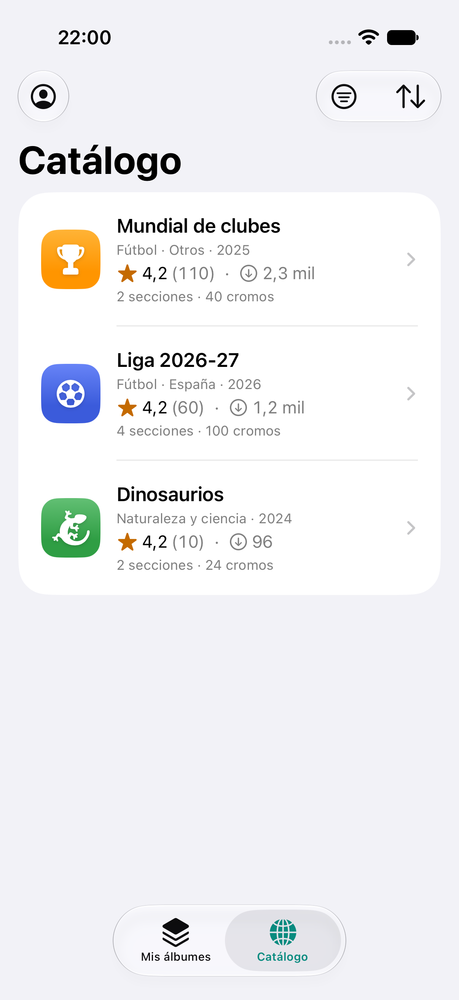
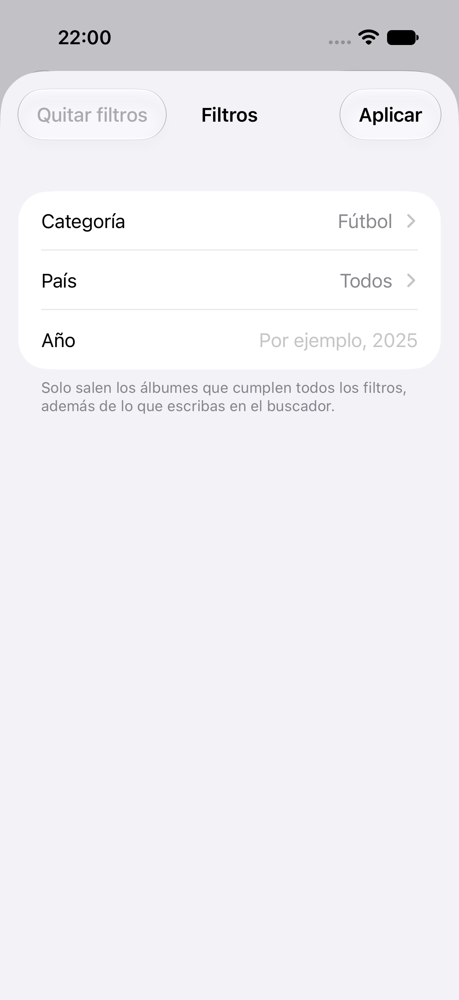
Publicar un álbum
Comparte tu álbum con todos los que usan la app.
- Para publicar tienes que haber iniciado sesión en iCloud en el iPhone.
- En el editor, pon la categoría, el país, el año y una descripción, para que otros lo encuentren y sepan qué es.
- Toca «Publicar en el catálogo». Se publican las secciones y los cromos, no lo que tienes apuntado, y no se muestra tu nombre.
- La primera vez, acepta las normas del catálogo: nada ofensivo ni datos personales. Si hay palabras no permitidas, la app te dice dónde cambiarlas.
- Solo tú puedes cambiarlo. Si lo editas, toca «Publicar actualización» y quien lo tenga recibirá el aviso.
- Si un álbum que publicaste ya no está en «Mis álbumes» o no puedes editarlo, en «Catálogo» toca «Publicados por ti», ábrelo y toca «Recuperar como propio». Usa la misma cuenta de iCloud con la que lo publicaste.
Normas del catálogo. Lo que publicas lo puede ver cualquiera que use AllStickers, también niños:
- Publica solo álbumes de cromos: sus secciones y sus cromos.
- Nada ofensivo, violento, sexual, de odio ni que insulte a nadie.
- Sin datos personales: ni nombres completos de particulares, ni teléfonos, ni direcciones.
- Que los datos sean ciertos y no copien el álbum de otro usuario.
No toleramos el contenido ofensivo ni a quien abusa del catálogo: los álbumes que no cumplan las normas se retiran, y cualquiera puede bloquear a su autor. Si ves uno, denúncialo desde su menú «…».
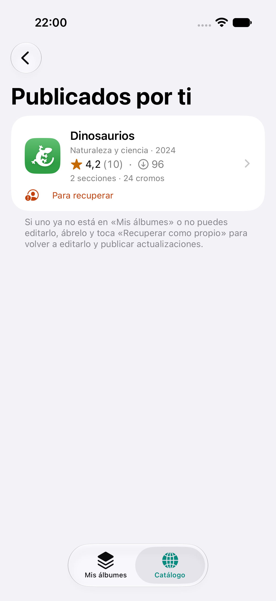
iCloud y tus iPhone
Tus álbumes, a salvo y en todos tus iPhone.
- Si has iniciado sesión en iCloud en el iPhone, tus álbumes, lo apuntado y los intercambios se guardan solos en tu iCloud. No tienes que hacer nada.
- Si borras la app o estrenas iPhone, entra con la misma cuenta de iCloud y abre AllStickers: todo vuelve solo. Puede tardar un poco.
- Lo que apuntas en un iPhone sale también en tus otros iPhone con la misma cuenta. Tu alias para intercambiar, también.
- Si cambias el mismo cromo en dos iPhone a la vez, se queda el último cambio. Si tienes el mismo álbum dos veces, se junta en uno sin perder nada de lo apuntado.
- Lo que guardas en iCloud solo lo ves tú. Lo que publicas en el catálogo es aparte.
- Sin iCloud, todo se queda en este iPhone y se sube cuando inicies sesión. Si no quieres usarlo, desactiva AllStickers en Ajustes, en tu nombre y luego en iCloud.
Sugerencias y fallos
¿Tienes una idea o algo no funciona? En Ayuda, toca «Sugerencias y fallos», elige «Sugerencia» o «Fallo» y se abrirá tu correo con un mensaje preparado para allstickers.app@icloud.com. Al final lleva la versión de la app y de iOS y el modelo de iPhone, para ayudarnos a encontrar el fallo; puedes borrarlos antes de enviarlo.
Preguntas frecuentes
Dudas que suelen salir.
¿Por qué no encuentro a mi amigo para cambiar?
Los dos tenéis que estar en «Intercambiar» del mismo álbum, con el Bluetooth y el Wi‑Fi activados y con permiso para la red local. Si tiene otra versión del álbum, aparece en gris y te dice quién debe actualizar.
¿Por qué no puedo intercambiar un álbum que he creado yo?
Primero tienes que exportarlo y que tu amigo lo importe. Así los dos tenéis exactamente el mismo álbum.
¿Por qué no puedo editar un álbum que me han pasado?
Para que sea igual para todos y podáis cambiar cromos. Puedes crear una copia editable, pero será otro álbum y no servirá para cambiar con quien tenga el original.
¿Qué significan «5bis» o «A3»?
Algunas colecciones tienen cromos con letras o cromos extra. En AllStickers cada cromo puede tener el código que quieras.
¿Quién hace los álbumes del catálogo?
Los usuarios de AllStickers. Cada álbum lo mantiene quien lo publicó, así que puede tener errores.
¿Se pierden mis cromos si borro la app?
No, si tienes iCloud: tus álbumes y lo apuntado vuelven al reinstalarla y salen en tus otros iPhone. Sin iCloud, se pierden.
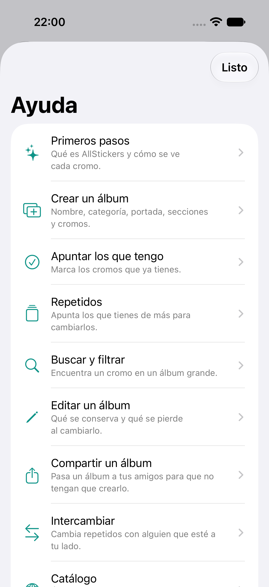
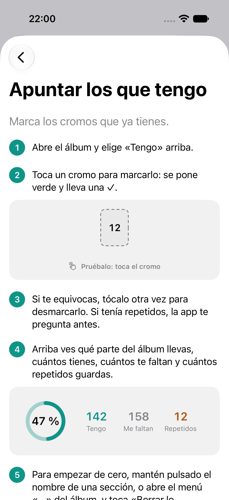